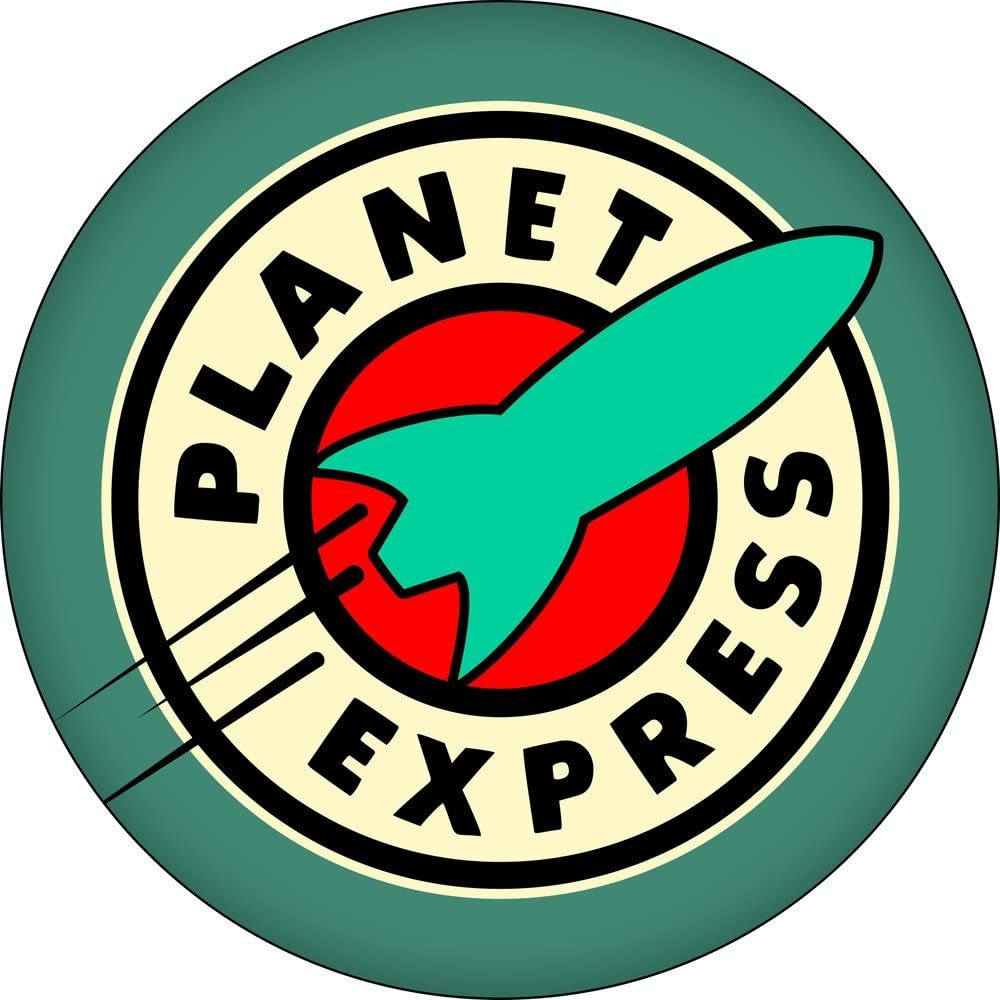

Secure Enterprise Network Design

During group work in my junior year at university, we developed an entire network design for a pretend startup company. We chose the company Planet Express, from the TV show
Futurama. We included very specific details for each department, including permissions and servers.
We then created a technical report which outlined the specifics of the network. We included
imported IT policies, such as internet usage policies as well as the various group policies.